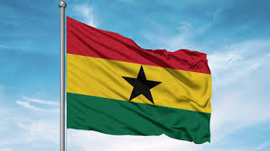
Home
Discover the beauty and culture of Ghana with us. Explore our comprehensive guide to the best tourist attractions, from historical sites to natural wonders. Whether you're planning a trip or just curious about Ghana, we've got you covered!
Start your adventure today and uncover the hidden gems of Ghana's tourism scene. From the bustling markets of Accra to the serene beaches of Busua, there's something for every traveler to enjoy. Join us as we take you on a journey through Ghana's rich history, vibrant culture, and breathtaking landscapes.
Don't miss out on the opportunity to experience the wonders of Ghana. Explore our website to find out more about the top tourist attractions, travel tips, and cultural insights that will make your visit unforgettable. Welcome to Toruist, your gateway to Ghana's incredible tourism offerings!
Get ready to embark on an unforgettable journey through Ghana's top tourist attractions. Whether you're a history buff, nature lover, or culture enthusiast, Ghana has something to offer for everyone. From the iconic Cape Coast Castle to the breathtaking Kakum National Park, there's no shortage of incredible sites to explore. Start planning your trip today and discover the wonders of Ghana with us!
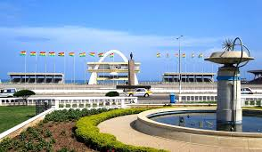
About
This Website emphasizes on importance of Toruist Attraction in Ghana.
In Ghana the Toruist attraction plays a significant role in the country's cultural and economic landscape.
Ghana is known for its rich history, vibrant culture, and diverse landscapes, making it a popular destination for tourists from around the world. The country boasts a wide range of attractions, including historical sites, natural wonders, and cultural festivals.
Some of the most popular Toruist attractions in Ghana include the Kwakwada Waterfalls, the Kakum National Park, and the Cape Coast Castle.
These attractions not only provide visitors with a unique and memorable experience but also contribute to the local economy by creating jobs and generating revenue through tourism.
Overall, the Toruist attraction in Ghana is an important aspect of the country's identity and plays a crucial role in promoting cultural exchange and economic development.
Whether you're interested in history, nature, or culture, Ghana has something to offer for every type of traveler. From the bustling markets of Accra to the serene beaches of Busua, there's no shortage of amazing Toruist attractions to explore in this vibrant country.
So, if you're looking for an unforgettable travel experience, consider visiting Ghana and discovering the incredible Toruist attractions that await you!
Toruist Site
Ghana is home to a variety of tourist attractions that cater to different interests and preferences. Here are some of the top tourist sites in Ghana:
Cape Coast Castle: A historical site that served as a major hub for the transatlantic slave trade.
Kakum National Park: A tropical rainforest known for its rich biodiversity and canopy walkway.
Kwakwada Waterfalls: A scenic waterfall surrounded by lush vegetation.
Wli Waterfalls: The highest waterfall in Ghana, located in the Volta Region.
Elmina Castle: A UNESCO World Heritage site that served as a hub for the transatlantic slave trade.
Nzulezo Stilt Village: A unique traditional village built on stilts over a lagoon.
Shai Hills Resource Reserve: A protected area known for its diverse wildlife and hiking trails.
Kwame Nkrumah Mausoleum: A memorial site dedicated to Ghana's first president.
Manhyia Palace: A historical site that served as the residence of the Asantehene, the traditional ruler of the Ashanti Kingdom.
Paga Crocodile Pond:A famous tourist attraction in the Northern Region of Ghana.
Aburi Botanical Gardens: A beautiful garden located in the Central Region of Ghana, known for its diverse collection of plants and flowers.
Mole National Park: A vast national park known for its diverse wildlife and scenic landscapes.
Busua Beach: A pristine beach located in the Western Region of Ghana, known for its clear waters and sandy shores.
Labadi Beach: A popular beach located in Accra, known for its lively atmosphere and vibrant culture.
Kakum National Park: A tropical rainforest known for its rich biodiversity and canopy walkway.
Wli Waterfalls: The highest waterfall in Ghana, located in the Volta Region.
Gallery
Explore the beauty of Ghana through our gallery of stunning images showcasing the country's top tourist attractions. From the historic Cape Coast Castle to the breathtaking Kakum National Park, our gallery offers a visual journey through Ghana's rich culture and natural wonders. Whether you're planning a trip or simply want to experience the beauty of Ghana from afar, our gallery is the perfect place to start your adventure!
Discover the vibrant culture, stunning landscapes, and rich history of Ghana through our carefully curated gallery. Each image captures the essence of Ghana's top tourist attractions, providing a glimpse into the unique experiences that await you. From the bustling markets of Accra to the serene beaches of Busua, our gallery showcases the diverse beauty of Ghana and invites you to explore it for yourself!
Nature & Parks
Kakum National Park
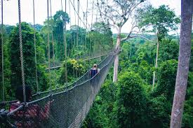
Kakum National Park is a protected tropical rainforest located in Ghana’s Central Region.
It is famous for its canopy walkway, which offers visitors a unique view above the forest.
The park is home to diverse wildlife including monkeys, birds, and rare plant species.
Mole National Park
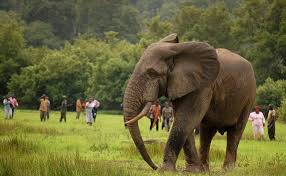
Mole National Park is the largest wildlife reserve in Ghana, located in the Northern Region.
It is known for elephants, antelopes, baboons, and various bird species.
Visitors can enjoy guided safari tours and experience nature up close.
Bui National Park
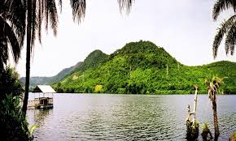
Bui National Park lies along the Black Volta River and is rich in biodiversity.
It is one of the few places in Ghana where hippos can be found.
The park offers scenic landscapes and opportunities for eco-tourism.
Kwakwada Waterfalls
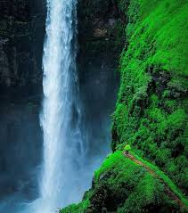
Kwakwada Waterfalls is a hidden natural attraction surrounded by lush vegetation.
The waterfall provides a calm and refreshing environment for visitors.
It is an ideal spot for relaxation and nature photography.
Kyabobo National Park
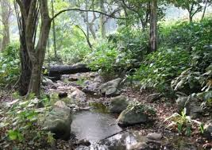
Kyabobo National Park is located in the Volta Region near the Togo border.
It features mountains, forests, and diverse wildlife species.
The park is perfect for hiking, bird watching, and adventure tourism.
Ankasa Conservation Area
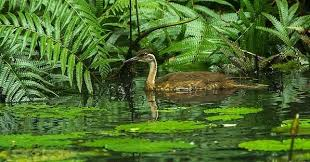
Ankasa Conservation Area is one of Ghana’s most pristine rainforest reserves.
It is home to rare animals, butterflies, and dense vegetation.
The area is ideal for eco-tourism and scientific research.
Shai Hills Resource Reserve
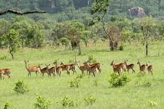
Shai Hills is a protected reserve located near Accra.
It combines wildlife viewing with historical caves and cultural heritage.
Visitors can see antelopes, monkeys, and explore ancient settlements.
Boti Falls
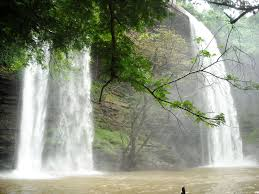
Boti Falls is a twin waterfall located in the Eastern Region of Ghana.
It is most impressive during the rainy season when both falls are active.
The site also features umbrella rock and scenic hiking trails.
Aburi Botanical Gardens
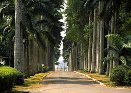
Aburi Botanical Gardens is a peaceful garden located in the Eastern Region.
It contains a wide variety of tropical plants and trees.
The gardens are ideal for picnics, relaxation, and educational tours.
Wli Waterfalls
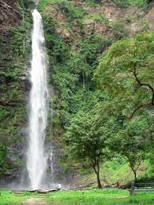
Wli Waterfalls is the highest waterfall in West Africa, located in the Volta Region.
It is surrounded by lush forest and a cool natural environment.
Visitors can hike to the upper falls and enjoy breathtaking views.
Historical Site & Castle
Cape Coast Castle
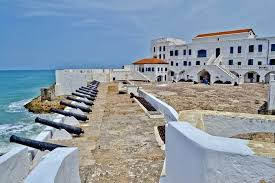
Cape Coast Castle is a historic fortress used during the transatlantic slave trade.
It now serves as a museum and UNESCO World Heritage Site.
Visitors learn about Ghana’s history and the impact of slavery.
Elmina Castle
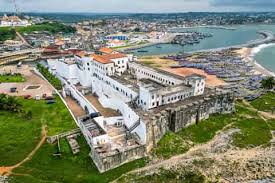
Elmina Castle is the oldest European building in sub-Saharan Africa.
It played a major role in the transatlantic slave trade.
Today, it stands as a symbol of history and remembrance.
Christiansborg Castle
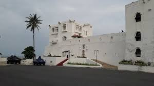
Christiansborg Castle, also known as Osu Castle, served as a government seat.
It has a long history involving colonial rule and administration.
The castle reflects Ghana’s political and historical journey.
Kumasi Fort
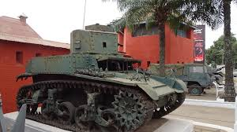
Kumasi Fort was built by the British during colonial times.
It now houses a military museum showcasing Ghana’s history.
The site is important to the heritage of the Ashanti Kingdom.
Ussher Fort
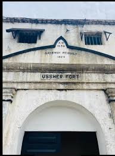
Ussher Fort is located in Accra and dates back to the 17th century.
It was used during colonial times and the slave trade.
The fort is now preserved as a historical monument.
James Fort
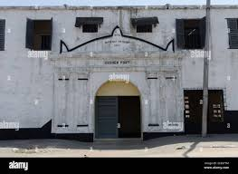
James Fort is a colonial fort located in Jamestown, Accra.
It was used as a prison during British rule.
The site reflects Ghana’s colonial and political history.
Larabanga Mosque
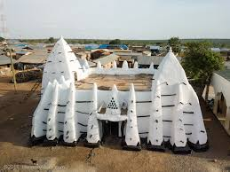
Larabanga Mosque is one of the oldest mosques in West Africa.
It is built in traditional Sudanese architectural style.
The mosque is an important religious and cultural landmark.
Salaga Slave Market
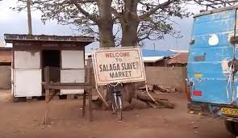
Salaga was a major slave trading center in northern Ghana.
It played a key role in the trans-Saharan trade routes.
The site now serves as a place of historical education.
Wa Naa's Palace
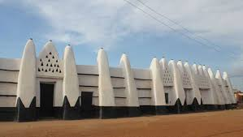
Wa Naa’s Palace is the traditional seat of the Wa chief.
It reflects the culture and leadership of the Wala people.
The palace is an important symbol of authority and heritage.
Nalerigu Defence Wall
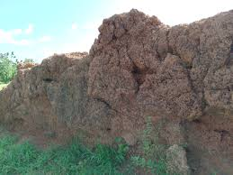
The Nalerigu Defence Wall was built to protect communities from slave raiders.
It is a historical structure with narrow entry points.
The wall stands as a reminder of past conflicts and resilience.
Beaches & Coastal Attraction
Labadi Beach
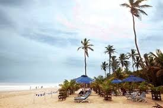
Labadi Beach is one of the most popular beaches in Accra.
It is known for its lively atmosphere, music, and cultural performances.
Visitors enjoy horse riding, local food, and entertainment.
Axim Beach
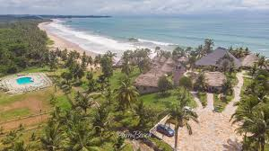
Axim Beach is a peaceful coastal destination in the Western Region.
It features clean sands and calm waves ideal for relaxation.
The beach is perfect for tourists seeking a quiet getaway.
Kokrobite Beach
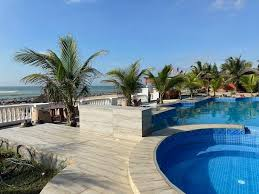
Kokrobite Beach is famous for its vibrant nightlife and reggae music.
It attracts both locals and international visitors.
The beach is ideal for parties, relaxation, and cultural experiences.
Bojo Beach
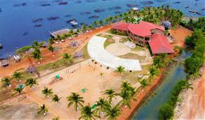
Bojo Beach is a clean and well-maintained private beach near Accra.
It is accessible by a short boat ride across a lagoon.
The beach offers a calm and relaxing environment for visitors.
Anomabo Beach
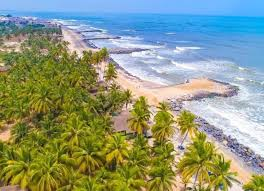
Anomabo Beach is a beautiful coastal area with historical significance.
It is located near Anomabo Fort and offers scenic ocean views.
The beach is great for relaxation and cultural tourism.
Ada Foah Beach
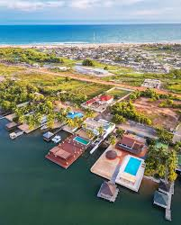
Ada Foah Beach is located where the Volta River meets the Atlantic Ocean.
It offers a unique mix of river and sea experiences.
The area is popular for water sports and boat cruises.
Brenu Beach
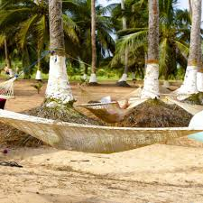
Brenu Beach is a serene and less crowded beach in the Central Region.
It is known for its natural beauty and peaceful surroundings.
It is perfect for picnics and relaxation.
Cape Three Points
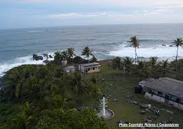
Cape Three Points is the southernmost point of Ghana.
It is known for its lighthouse and stunning coastal scenery.
The area is ideal for eco-tourism and adventure.
Busua Beach
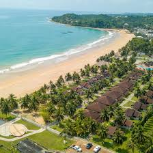
Busua Beach is a popular destination for surfing in Ghana.
It offers beautiful views and a relaxed coastal atmosphere.
The beach attracts both beginners and experienced surfers.
Princess Town Beach
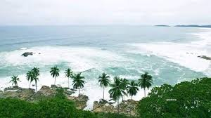
Princess Town Beach is a quiet and scenic beach in the Western Region.
It is located near historical Fort Gross Friedrichsburg.
The beach offers a peaceful escape with beautiful ocean views.
Culture & Museums
Manhyia Palace Museum
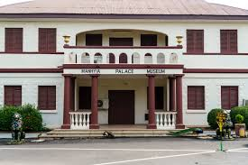
Manhyia Palace Museum is the former residence of the Asante kings.
It displays artifacts and history of the Ashanti Kingdom.
Visitors learn about traditional leadership and culture.
National Museum of Ghana
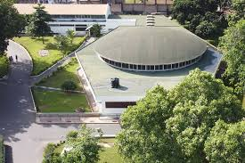
The National Museum of Ghana is the largest museum in the country.
It showcases archaeological, historical, and cultural artifacts.
The museum provides insight into Ghana’s rich heritage.
Kwame Nkrumah Mausoleum
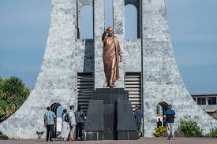
This mausoleum honors Ghana’s first president, Dr. Kwame Nkrumah.
It contains his tomb and a museum of his life and achievements.
The site is a symbol of Ghana’s independence history.
W.E.B. Du Bois Center
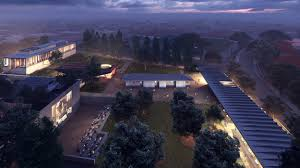
The center is dedicated to the African-American scholar W.E.B. Du Bois.
It preserves his legacy and contributions to Pan-Africanism.
Visitors can explore his home, library, and mausoleum.
Nzulezu Stilt Village
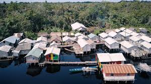
Nzulezu is a unique village built entirely on stilts over water.
It is located in the Western Region and accessible by canoe.
The village reflects a rare and fascinating way of life.
Sirigu Pottery Village
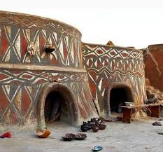
Sirigu is known for its traditional pottery and wall paintings.
It showcases the artistic skills of local women.
Visitors can learn and participate in craft-making activities.
Paga Crocodile Pond
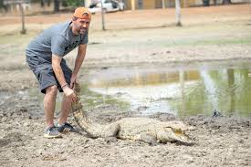
Paga Crocodile Pond is home to sacred and friendly crocodiles.
Visitors can safely interact and take photos with them.
The site holds cultural and spiritual importance.
Bonwire Kente Village
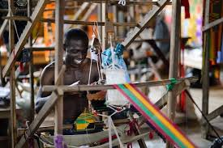
Bonwire is the birthplace of the famous Kente cloth.
Visitors can watch traditional weaving techniques.
The village highlights Ghana’s rich textile heritage.
Tafi Atome Monkey Sanctuary
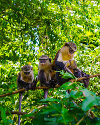
This sanctuary protects sacred monkeys in the Volta Region.
The monkeys are friendly and often interact with visitors.
The site promotes conservation and eco-tourism.
Kintampo Waterfalls
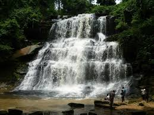
Kintampo Waterfalls is one of Ghana’s most beautiful natural sites.
It features cascading water surrounded by forest vegetation.
The area is ideal for relaxation and tourism.
Mountains, Lakes & Unique Spots
Mount Afaja
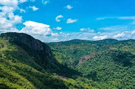
Mount Afaja is the highest mountain in Ghana.
It is located in the Volta Region near the town of Liati Wote.
The mountain is popular for hiking and adventure tourism.
Lake Volta
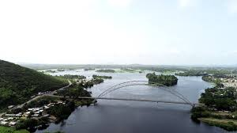
Lake Volta is one of the largest man-made lakes in the world.
It provides water transport, fishing, and hydroelectric power.
The lake is an important economic and tourist resource.
Volta River
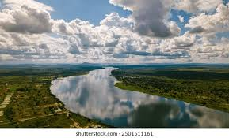
The Volta River is a major river system in Ghana.
It flows into the Atlantic Ocean and supports agriculture.
The river is vital for transport and hydroelectric energy.
Lake Bosumtwi
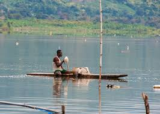
Lake Bosumtwi is a natural crater lake in the Ashanti Region.
It was formed by a meteorite impact thousands of years ago.
The lake is considered sacred by local communities.
Umbrella Rock
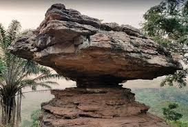
Umbrella Rock is a natural rock formation shaped like an umbrella.
It is located near Boti Falls in the Eastern Region.
The site offers great views and photo opportunities.
Tano Sacred Grove
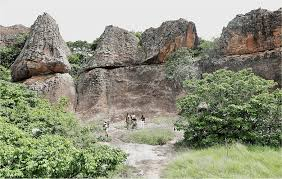
Tano Sacred Grove is a protected forest with spiritual importance.
It is associated with traditional beliefs and rituals.
The grove helps preserve biodiversity and culture.
Wechiau Hippo Sanctuary
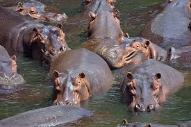
This sanctuary protects hippos along the Black Volta River.
Visitors can take canoe rides to observe the animals.
It promotes conservation and community tourism.
Amedzofe Mountains
Amedzofe is one of the highest settlements in Ghana.
It offers cool weather and scenic mountain views.
The area is ideal for hiking and relaxation.
Tagbo Falls
Tagbo Falls is located near Mount Afaja in the Volta Region.
It is surrounded by forest and wildlife.
The falls are a great destination for nature lovers.
Fuller Falls
Fuller Falls is located in the Bono East Region.
It is a quiet and less crowded waterfall destination.
The site is perfect for relaxation and eco-tourism.